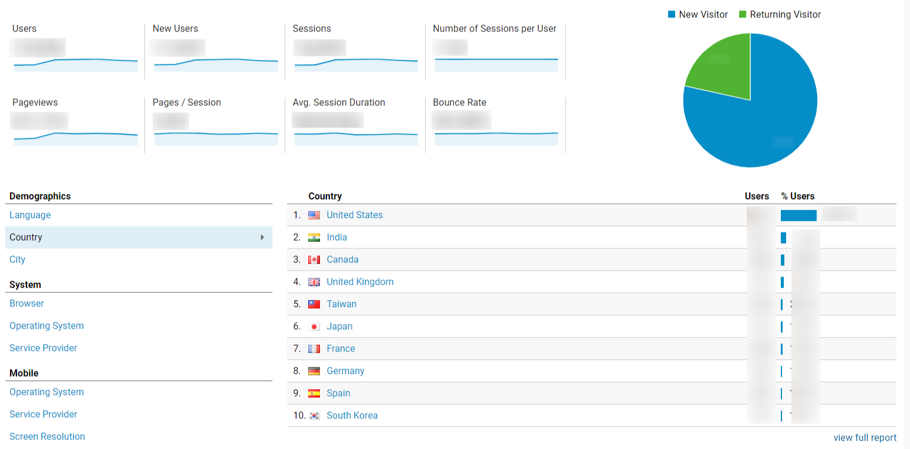

Introduction
Bounce rate defines a single visit to your website without interaction.
For example; if you visit a sites home page but don't follow to any additional pages or complete a form before leaving, then you have bounced.
It's an important factor to look at when trying to improve conversions or SEO.
If your pages are deterring users without action then it's harder to fulfill your goals.
Thankfully Google Analytics offers various ways to view and compare your bounce rates. Thus saving you time so you can focus on improving your pages.
This document aims to give you an idea of the different options available to view segmented analytics data for bounce rate.
So scroll to find out more.
Setting up Google Analytics
Before you can collect all of the useful data that Google Analytics presents, you'll need to set up an account and implement the necessary tracking code.
To get set up, you can use a Google account or make one (if you don't already have one).
You can then go to Google Analytics and log in using the aforementioned account, sign up and fill in your website information.
You'll need to aquire your tracking code by clicking 'Get tracking ID'.
The code uses JavaScript and looks similar to this:
window.dataLayer = window.dataLayer || [];
function gtag(){dataLayer.push(arguments);}
gtag('js', new Date());
gtag('config', 'UA-179006172-1');
Insert your code into the <head> section of your HTML, on each page, like so:
<head>
<script async src="https://www.googletagmanager.com/gtag/js?id=UA-54516992-1"></script>
<script>
window.dataLayer = window.dataLayer || [];
function gtag(){dataLayer.push(arguments);}
gtag('js', new Date());
gtag('config', 'UA-54516992-1');
</script>
</head>
Overview report
The first option on the list is the Overview tab.
This compares basic data for the site. Selecting Bounce Rate from the dropdown will give you a brief idea of how it's performing.
Overview offers a little bit of segmented information such as country or operating system.
For the real detail you'll want to keep reading as there are more in depth ways to look at this information.
Site Average vs Benchmarking
Before we get into the specific segmenting options you can see data for, it's important to establish how to view it to meet your needs.
There are different ways to compare bounce rate across your website.
A simple option is to look at the bounce rate column when viewing a specific audience report. This will give you an idea of how different factors compare with each other and against your site average.
For a more detailed analysis it's good to assess your bounce rate against the industry average.
To do this, click on the comparison filter button and then, once the window has loaded, select bounce rate from the dropdown.
The negative figures, to the left of the industry average line, are the ones performing better. Those to the right, with red coloured bars, are the ones you may want to improve.
Segmented Bounce Rate Views
The following segments are really useful for analysing bounce rate.
- Demographics
- Technology
- Mobile
- Geo
- Interests
Now lets take a closer look at what they do...
Demographics
In this section you're able to compare bounce rate by age or gender.
Age
Look at the bounce rate column and check if there are any patterns or stand out issues.
For example, if you're targeting young people as a market and notice bounce rate is particularly high amongst 18-24 year olds, you'll want to investigate further and improve that.
Gender
Similarly to age, you can currently view a bounce rate comparison between two genders, male & female.
So again if there's a notable discrepancy that conflicts with your target audience, it'll be important to re-assess what you're doing.
Alternatively, if gender isn't a metric you target, but there's a big difference, you'll want to make sure you aren't deterring people with how you present your product.
Technology
Making sure your site works across browsers, versions and operating systems is important.
You can use the Broser & OS view to compare bounce rate for various spec.
Find out how your bounce rate varies between Chrome and Safari, Windows and iOS, different screen sizes and more.
Tip: click on the respective browser to load a new screen comparing it's versions.
Mobile
Though screen size gives you a bit of an idea, there's actually the option for a device comparison.
Just check out the mobile tab below technology.
Overview will simply show you data for desktop, mobile and tablet.
Devices gets more specific and details brand, model etc for comparison.
Geo
You can also look at bounce rate by language or geographic location. This is important for multi-national businesses or those in countries like Canada where different languages are regionally prevalent.
Location
Setting location gives you the option of a country, city, continent or sub-continent view.
If bounce rate is notably better in the US than UK then you'll want to investigate how your site and market differ on both sides of the Atlantic.
Language
You might find you need to improve the French version of your site if it performs particularly badly on bounce rate, for example.
For a site with different language versions make sure you're using hreflang attribute set to both language and country. For example, a US, English language version would need this:
<link rel="alternate" "href="http://example.com" hreflang="en-us" />
Interests
Interests categorises users by, yes you guessed it, what they're interested in.
Aside from the overview, it's split into two areas: affinity category and in-market segment (users earlier and later in the purchase process respectively).
Summary
There is still lots more that can be done when using Google Analytics. That includes other ways to compare bounce rate as well as a vast myriad of other options.
Hopefully the information provided has given you a better idea of some options available to you though.
It's definitely worth exploring this tool and how it can benefit your business.
Google even offer free courses to help you learn about using it, check out their Analytics Academy for more information.